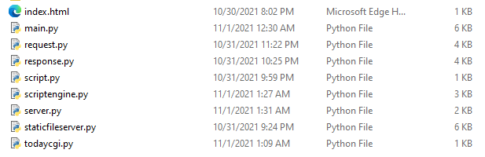

What you are looking at (above) is about 800lines of python code, single threaded, that looks for a file named after the GET instruction and outputs the file with HTTP response header pre-pended. That all you need to serve webpages.This is the RFC for HTTP linked to by apache...
GET /todaycgi.py HTTP/1.1
... HTTP Headers can be ignored for basic functionality ...
\r\n\r\n'
which returns
HTTP/1.1 200 OK'
Date: Sat, 20 Nov 2021 12:34:31 '
Server: 192.168.1.79'
Content-Type: text/html'
Content-Length: 122'
\n\n\r\n
<html>
<head><title>Today's date and time</title></head>
<body>
you are 127.0.0.1<br>
Sat, 20 Nov 2021 12:34:31
</head>
</html>
But I got bored...